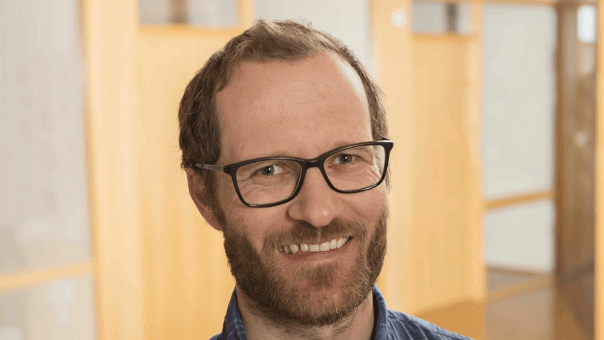

LLM workflows.
Using LLMs and coding agents to pull structure out of text: extraction, ingestion, and the kind of summaries I'd rather not write by hand.
AI tools, computer vision and applied genomics
Senior scientist at AquaGen AS, Trondheim.
My background is in genomics, but these days most of my time goes into building things: tools that lean on LLMs, image-based phenotyping, and the pipelines, dashboards, and small APIs that sit between raw data and a decision someone actually has to make. The messy part in the middle is the part I like.

Most of what I do falls into a few areas.
Using LLMs and coding agents to pull structure out of text: extraction, ingestion, and the kind of summaries I'd rather not write by hand.
Image-based phenotyping: getting reliable measurements out of images and video, in a way that gives the same answer twice.
Analysis workflows someone else can rerun and actually trust, from raw input all the way to the result.
Small dashboards, FastAPI services, and PWAs that make the numbers easy to see and easy to check.
A few things I've built in the open. Side projects, really — not the full picture of what I do day to day.
A few below. Google Scholar has the complete, up-to-date list, and there's a machine-readable version in publications.json.
Genomics of bovine milk fat composition. Doctoral thesis, Norwegian University of Life Sciences, 2018. Series: PhD Thesis;2018:19.
The thesis examined mutations affecting fatty acid composition in Norwegian Red cattle milk, with emphasis on de novo synthesized fatty acids and the major milk fatty acids palmitic acid and oleic acid.